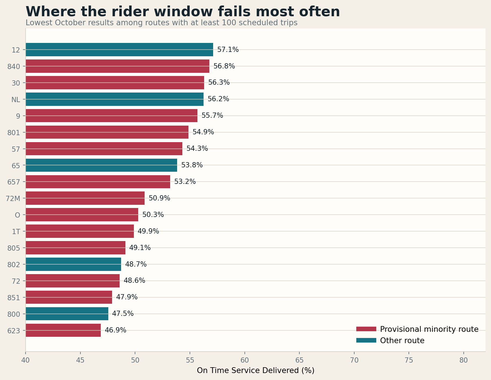

AC Transit’s 2026 Title VI Program uses a straightforward route test: a census block group is “minority” when its people-of-color share is at or above the service-area average, and a line is a minority route when at least one-third of its mileage runs through those block groups. Staff then compares loads, scheduled headways, on-time performance, access, fleet age, and bus-stop amenities. A difference of 15 percent triggers the district’s monitoring threshold.
The public packet does not include the underlying block-group universe or current route-by-route classification. For this provisional version, I used the district’s published 74 percent service-area people-of-color share as the block-group threshold, the latest 2020–2024 American Community Survey, and Fall 2026 route geometry. That produces 72 provisional minority routes out of 125 current routes, compared with 68 of 123 in staff’s Fall 2025 analysis.
The provisional route map
The map clips Transbay lines to the East Bay portion of their route, follows the district’s one-third-mileage rule, and uses the 74 percent provisional block-group threshold. Lines near one-third are inherently sensitive to the missing official geography: NL falls just below at 32.9 percent; L falls just above at 34.2 percent. Those are exactly the classifications to revisit first when the records arrive.

Show the 72 provisionally classified minority routes
1T, 9, 14, 19, 22, 28, 30, 34, 35, 36, 40, 41, 45, 46L, 51A, 54, 56, 57, 60, 62, 70, 71, 72, 72L, 72M, 73, 74, 76, 86, 90, 93, 95, 96, 97, 98, 200, 210, 211, 216, 231, 239, 251, 281, 607, 620, 621, 623, 624, 625, 627, 629, 641, 652, 654, 657, 667, 675, 678, 680, 681, 689, 703, 801, 805, 840, 851, DB, DB1, L, NX3, O, and U.
One potential flag appears in the scheduled weekend headway test
The weekday and weekend scheduled-headway calculation most closely reproduces the staff table. Fall 2026 minority routes are scheduled less frequently in every period. Weekday differences remain below 15 percent. Saturday and Sunday reach 15.8 and 15.9 percent—barely over the district’s policy screen and higher than staff’s 13.7 percent Fall 2025 result.
| Scheduled period | Minority routes | Other routes | Disparity | Provisional screen |
|---|---|---|---|---|
| Weekday peak | 25.53 min | 22.13 min | 13.3% | Below 15% |
| Weekday off-peak | 27.72 min | 25.24 min | 8.9% | Below 15% |
| Saturday | 30.81 min | 25.95 min | 15.8% | Potential flag |
| Sunday | 30.81 min | 25.91 min | 15.9% | Potential flag |
The staff formula expresses the excess headway as a share of the minority-route headway. School lines in the 600 series and Early Bird lines in the 700 series are excluded, matching the packet. “Peak” is provisionally defined as 6–10 AM and 3–7 PM because the packet does not publish its peak-period cutoffs.
Actual service tells a more mixed story
The staff report monitors schedule and on-time performance, but not whether scheduled trips actually ran, whether stops were reached in a useful rider window, or whether buses arrived evenly. October’s real-time data adds those measures. Minority routes delivered 86.1 percent of scheduled trips, one point below other routes. They performed better on the independent punctuality proxy and On Time Service Delivered, while their actual expected wait was 1.5 minutes longer. None of those group differences crosses 15 percent.

| Current measure | Minority routes | Other routes | Reading |
|---|---|---|---|
| Trip delivery | 86.12% | 87.09% | Minority routes 1.0 point lower; below the 15% screen |
| Independent −1/+5 arrival proxy | 66.19% | 61.33% | Minority routes better |
| On Time Service Delivered | 63.43% | 61.52% | Minority routes better |
| Actual expected wait | 15.85 min | 14.35 min | Minority routes 9.5% worse; below the 15% screen |
| Long gaps | 16.11% | 16.45% | Minority routes slightly better |
| Weekday access | 76.88% | 71.43% | Minority block groups better in the proxy service area |
Aggregates can conceal much larger line-level failures. On Time Service Delivered ranges widely across both groups. The lowest current results include the 623, 800, 851, 72, 802, 805, 1T, O, and 72M. A Title VI monitor becomes more useful when the board can see those routes rather than only one average for each group.

All current routes
Explore the route-level results
Search or filter the full October dataset. Click a column heading to sort. The downloadable files preserve weekday, Saturday, and Sunday detail.
Loads, vehicle age, and amenities are necessarily provisional
The realtime attributes feed contains fresh capacity and crowding bands, but no direct passenger counts. Applying the project’s published status-band estimates produces an average load of 15.8 riders on minority routes and 16.0 on other routes; average estimated trip maxima are 19.3 and 20.9. Staff treats lower loads on minority routes as non-adverse, but these values are estimates—not APC counts—and should not replace the requested load data.
The public fleet roster is dated December 2023. Matching its vehicle-number series to October observations covers 85.9 percent of minority-route snapshots and 93.3 percent of other-route snapshots. The resulting snapshot-weighted ages are 9.39 and 9.22 years, a 0.17-year difference. The coverage gap and stale roster make that descriptive only.
The current stop file has locations and route names, but no shelter, bench, trash-can, lighting, or realtime-sign attributes. It locates 2,457 stops in provisional minority block groups and 2,174 in other block groups. That is a stop-distribution check, not a reproduction of staff’s amenity-equity table. The requested amenity inventory is required to complete it.